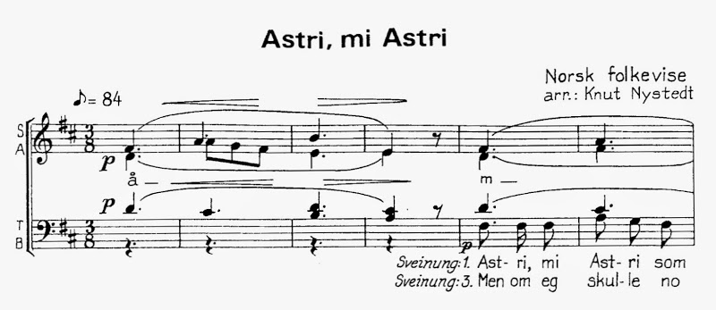

|  |
| First system of the score we’re singing from, arranged by Knut Nystedt. |
{kind=link}
In (British) English, our spelling convention is centuries-old, largely set in concrete when the printing press came along and spread the written word throughout the land. The first English dictionary was published in 1604. (Consider how different some words are written from the way we say them: the sounds changed after the spelling conventions were set.) Before that, the London dialect, as the language of government and administration, became dominant over others.
In Norway, the story is entirely different. I haven’t the space to wax lyrical here (I want to focus on this song!), but for now be satisfied in knowing that (i) the written form of Norwegian for many years was basically Danish, (ii) people continued to speak starkly different dialects in their separated valleys (I know someone who can recognise the dialect/accent of people who come from the other side of his fjord!), (iii) many Norwegian folk songs were written (or written down) in the 19th century, at a time when there was no standard written form of the language.
The net result of all of this? When a choir begins to sing a new folk song they’re not familiar with, there’s often much discussion on what on Earth it means. Last night I spent some happy hours with fellow members of the Oslo Vokalensemble, after our rehearsal, at Tullin’s Café, and we spent some of that time discussing the meaning of Astri, mi Astri. (Strictly speaking, they discussed and I largely listened.) As a result of that, and some further research today, I’m writing up some of what I’ve discovered.
First off, if you’d like to hear the song, try this out (just the melody, sung by Kirsten Bråten Berg):
Astri, mi Astri was written by Hans Hanson (1777–1837), and first published as Sveinung aa Astri (Sveinung and Astri) in Conrad Nicolai Schwach’s poem collection Nor: en poetisk Nytaarsgave for 1816.
| Detail from cover page of the previous year’s Nor: en poetisk Nytaarsgave for 1815, edited by Conrad N. Schwach. |
| Source: National Library |
{kind=link}
Let’s cut to the chase and take a look at the poem. On the left I show the words as they stand in our score (which are not the original; more later), and to the right I show my effort to render the poem into bokmål, the more common of the two standard written forms of Norwegian today. (If you see any problems, please let me know!)
Text in our score Astri, mi Astri som eine helt tå meg, den ti du va’ meg so inderlig go, den ti du gret kvar ein gång eg gikk frå deg, som va’ kvar laurdagskveld, mins du det no. Då va’ eg bygdis den sælaste gut, inkje eg bytte mæ prest eller fut. Den ti du helt uta Astri åleine, då inkje Svanaug va’ venre fe deg; den ti du va’ no so snegge på beine, då du kvar laurdagskveld ila te meg: Inkje mæ skrivarens dotter ha’ eg dengangje bytta, sku’ eg mista deg. Men om eg skulle no Svanaug forlate, å om eg kom ho ’kje meire i hug; å om eg skulle te deg koma atte om eg te Astri igjen sku’ få hug: om eg no banna, at eg blei deg tru. Astri, mi Astri hot svara då du. Venar held soli, som glær bakom fjølle, de æ han Torgrim, kan eg segja deg; å du æ’ argar held villaste trolle, falskar held skomme på vatne mot meg; men eg æ likvæl di trugnaste møy. Bare mæ deg vil eg liva å døy. Source: Norsk Musikforlag A/S 1981 |
A little more bokmålish Astri, mi Astri som bare holdt av meg, den tid du var meg så inderlig god, den tid du gråt hver gang jeg gikk fra deg, som var hver lørdagskveld, minnes du det nå. Da var jeg bygdas lykkeligste gutt, ikke jeg bytte med prest eller fut. Den tid du holdt av Astri alene, da ikke Svanaug var penere for deg; den tid du var så raskt til beins, da du hver lørdagskveld hastet til meg: Ikke med skriverens datter har jeg den gangen byttet, skulle jeg mistet deg. Men om jeg skulle nå Svanaug forlate, og om jeg hun kom ikke mer i hug; og om jeg skulle til deg komme tilbake, om jeg til Astri igjen skulle få hug: om jeg nå bannet at jeg ble deg tro. Astri, mi Astri hva svarte da du. Penere enn sola, som gløder bak fjell, det er han Torgrim, kan jeg sier deg; og du er argere enn villeste trollen, falskere enn skum på vann mot meg; men jeg er likevel deg trofast møy. Bare med deg vil jeg live og dø. Source: Various / My valiant efforts |
The song we have is in four verses, alternating between the points of view of Sveinung (the man) and Astri (the woman), beginning with Sveinung. Each verse is composed of six lines. Hanson’s original poem has six verses, as we’ll see later.
Astri and Sveinung are both old Nordic names. Astri (now more commonly Astrid) means loving or beauty, while Sveinung (much less common today) doesn’t mean piglet, as I'd suspected, but ‘descendant of Svein’, and Svein (and variants) simply means ‘boy’. Yes, that’s right: anyone called Sveinung has a male somewhere in their family tree.
Let’s now see what this looks like in modern English, remembering that the point of view alternates between Sveinung (first) and Astri:
Direct English translation Astri, my Astri who only loved me, when you were so wholly good to me, when you cried every time I left you, which was every Saturday evening, you’ll recall now. At that time I was the town’s happiest boy and would change places with neither priest nor bailiff. When you loved only Astri then was Svanaug not prettier for you when you were so fast on your feet when you every Saturday evening hurried to me not with the judge’s daughter would I have at that time changed places if [it meant] I would have lost you. But if I should now leave Svanaug and if she no longer enters my mind and if I should come back to you if I Astri again shall desire if I now swear that I remained true to you Astri, my Astri what would you say then? Prettier than the sun that glows behind the mountains, that is he, Torgrim, let me tell you, and you are angrier than the wildest troll, more false than foam on water to me, but I am nevertheless to you a faithful maiden. Only with you will I live and die. Source: Various / My valiant efforts |
What’s happening here? In the first two verses, the two lovers recall happier times. Sveinung was ‘the town’s happiest boy’ and wouldn’t switch places with either the priest or the bailiff, the two highest and most respected positions in the town. Sveinung visits every Saturday evening, and then disappears, to Astri’s tears. Meanwhile, Astri was fairly impressed by Sveinung’s speed, and wouldn’t have changed places even with the judge’s daughter (the Norwegian says ‘writer’s daughter’, but the judge in rural areas was the ‘sworn writer’ (sorenskriver), a term still used in some courts in Norway).
In the third and fourth verses (not in Nystedt’s arrangement), the two former lovers trade blows, talking in exaggerated terms about their current loves. Sveinung declares that he would die twice over for Svanaug, while Astri goes one better with something about having to be killed three times [can someone help here?].
In the fifth verse, Sveinung makes his planned move: what would happen if I forsook Svanaug, and came back to you, Astri? Astri is a picture of ancient womanhood: stand by your man, no matter what. True love, or something. Not only is Torgrim gorgeous and talented, but Sveinung is an angry, shallow man. Nevertheless, Sveinung is the man for Astri. We can only remind ourselves that such poems (must surely) represent a highly contracted version of events.
| Detail from Horace reads before Maecenas, by Fyodor Bronnikov. |
| Source: Wikimedia commons |
{kind=link}
But here’s where it gets interesting: the poem is actually an ‘omdiktning’ (a poetic reinterpretation) of Horace’s Ode Donec gratus eram tibi (III.9), published in 23BC. In Horace’s original version, the six verses alternate the voices of Horace (himself) and Lydia. The interim lovers are Chloe (“Now Chloe is my treasure”) and Calais (“my own fond lover / young Calais”). Hanson uses six lines per verse, to Horace’s four. While Latin is certainly a more compact language than most modern European languages, and perhaps the extra space is required, it seems that Hanson has also embellished a little. Another example of that embellishment is in verses 3 and 4, where we saw earlier that Sveinung would happily die twice, and Astri three times. These are each one more death than the original: clearly once you’ve died once, why not go all out?
What’s interesting is how Hanson has translated the original Roman poem to a Norwegian context. While in the original Horace was happier “than the Persian King”, Hanson has Sveinung as “the town’s happiest boy / and wouldn’t have changed places with either priest or bailiff”.
Let’s take a look at the final verse a little more closely:
Horace’s version Though he is fairer, milder than starlight, you lighter than bark of tree, than stormy Hadria wilder, with you to live, to die, were bliss for me. |
Hanson’s version Prettier than the sun that glows behind the mountains is he, Torgrim, let me tell you, and you are angrier than the wildest troll, more false than foam on water to me But I am nevertheless to you a faithful maiden Only with you will I live, will I die. |
We can see here how Hanson has shifted the poem to Norway. While Calais was ‘fairer, milder than starlight’, Torgrim is ‘prettier than the sun that glows behind the mountains’; where Horace was ‘lighter than bark of tree’ (think of cork: light and lacking substance), Sveinung is ‘more false than foam on water’; and the ‘stormy Hadria’ (the Adriatic Sea) becomes an angry troll.
Foam on water is false because it looks like it has substance, but disappears in a breath of wind. The expression used by Hanson is actually given as an example usage of the word ‘skum’ in the bokmål Ordbok – “være falsk som skum på vann” – but I can’t find many hits for this on the internet, and the OVE crowd didn’t recognise it.
For me, interpretation of the final line of the poem isn’t obvious. Hanson’s text says “live å døy”, which in modern Norwegian would mean “live to die”, but here ‘å’ means 'and'. The original version from Horace helped here, ‘tecum vivere amem, tecum obeam libens’, which is often translated to ‘I want to live and to die with you’, but perhaps a better rendering would be ‘With you would I love to live; with you would I willingly die’ (“libens” here indicates willingness, rather than desire). Hanson has contracted this somewhat, but friends in OVE tell me that the meaning is still clear. Note that Horace’s original ode is often titled ‘reconciliation’ (Lou Francis calls it ‘an amusing reconciliation between old adversaries’), so it’s definitely intended to have a happy ending!
It’s worth taking a look at Horace’s original, which you can read here. It’s much shorter than Hanson’s version, som sagt. Note that this is a poetic (and rhyming) translation, so may not perfectly represent the original Latin.
Here’s what may be Hanson’s original text (odd-numbered verses from Sveinung on the left, even-numbered verses from Astri on the right). Verses 3 and 4 (the middle row) are those that don’t appear in Nystedt’s arrangement. The words certainly haven’t come from the original edition, so I can’t say if they’re exactly the original words. (If anyone’s super keen, NTNU has the book on their shelves!) Good luck understanding this:
Sveinung Denti Du, Astri, saa mykje hælt ta mæg, Da Du saa blilig ti Fangje mit laag; Denti Du græt, qvergang æg gjik ifraa Dæg, Da du saa gla mæg qver Lurdagsqvæl saag: Da var æg Bygdis den sælaste Guut, Ingkje æg bytta mæ Præst eller Fuut. Heretter bare te Svanoug æg belar Ho, som er stændigt saa gosli aa bli, Ho, som saa jilskli paa Langeleken spelar; Svanoug den vene ska naa væra mi. Jenne saa ville æg tvo Gange døi, Naar eg kunn’ glæe mi venøgde Møi. Men om æg skulle Svanoug forlate Om æg naa kom ho ’kje meire ihuug: Om æg te Dæg skulle naa komme atte, Og æg te Astri igjen sku faa Huug; Om æg naa banna, at æg blei Dæg tru: Astri, mi Astri! haat svara da Du? | Astri Denti Du hælt uta Astri aleine, Dent’kje Svanoug var venra for Dæg; Denti Du var naa saa snæge paa Beine, Naar Du qver Lurdagsqvel ela tæ mæg: Inkje mæ Skrivarens Dotter ha æg Dengangen bytta, sku æg mista Dæg. Naa hæl æg bara ta Torgrim den flinke, Eismal æg væhlt’ en ta Belarer fleir; Sveinung, jo Sveinung! Du tar naa slet inkje Tænkje, at æg ska faa Huug te Dæg meir. Tri Ganger maatte Du slaa mæg ihjæl, Naar bar’ æg viste, at Torgrim var sæl. Denre hel Soli, som klar bakom Fjølle, De er en Torgrim, de seier æg Dæg; Aa Du er argar hel villaste Trølle, Falskar hel Skomme paa Vatne mot mæg: Men æg er likvæl’ di trugnaste Møi, Bara mæ Dæg vi æg liva aa døi. |
| Source: Høgskolen i Vestfold (with further corrections) |
I see the Wikipedia page on the song gives what it calls “The original text”, but I can't be sure if it’s original (there’s no source given). One reason to doubt is the presence of the letter å all the way through, and this letter was very uncommon in the 19th century (see the Wikipedia article on that).
| First page of the older version of Sveinung aa Astri. |
| Source: Høgskolen i Vestfold |
{kind=link}
| Sources |
Wikipedia: Astrid, mi Astrid
Store Norske Leksikon: Hans Hanson
The official Norwegian dictionary: Ordboka (både bokmål og nynorsk)
Google Translate
Wiktionary
John Conington, Ed. Q. Horatius Flaccus (Horace), Odes
A.S.Kline: Horace, the Odes
Louis Francis The Lydia Odes
Friends from Oslo Vokalesemble at Tullin’s café and later
| Notes |
In the original, the fifth line has ‘Bygdis den sælaste gut’, which I have rendered (with help) as ‘Bygdas lykkeligste gutt’ in bokmål. According to Visearkiven, the original uses the genitive form, which doesn’t exist in bokmål.